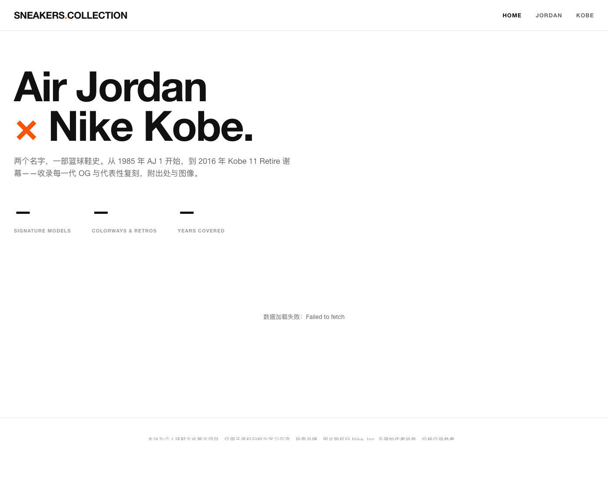

AI · For Business2026 W19商务服务行业内训
把 AI 当
同事用。
CodeBuddyClaude CodeWorkBuddy
三个 AI 同事 · 怎么用 · 怎么选 · 怎么落地
CodeBuddyClaude CodeWorkBuddy
三个 AI 同事 · 怎么用 · 怎么选 · 怎么落地
7 章 · 30-40 分钟 · 有 demo · 可截图带走
把 AI 当同事 · 三层架构 · Claw 家族 · Harness · Hermes vs OpenClaw · MCP · 合规边界
WorkBuddy（长期顾问）+ CodeBuddy（IDE 助理）· 速览 / Demo / 三件套 / vs 对位差异
4 大分类 · 20+ 工具全景 · 销售常用 7 个深讲 · CLI 三剑客 · Internal 封装版
横向对比 · 决策矩阵 · 销售一天工作流 · 项目全流程 · 多 agent · AI 工厂愿景
全球三阵营全景 · Anthropic 三档 · Context Window · 公司 vs 个人选型 · 销售场景速查
三层记忆概览 · AGENTS.md · Skill · Hook（vs 多 agent）· 最小模板
5 条误解辟谣 · 场景速查 · 成长路径 Day 1 → Quarter 1
心智一旦切对，整套用法都顺了
先认人 · 再看场景 · 第 3 章再讲整个内网工具生态（20+ 工具）
长期顾问 · 独立桌面 agent
IDE 助理 · 编辑器内即时
| 维度 | WorkBuddy | CodeBuddy | 业务影响 |
|---|---|---|---|
| 使用场景 | 专门坐下来"想一件大事" | 写代码 / 文档中途随手问 | WB 适合阶段性深聊 · CB 适合工作流插入 |
| 记忆深度 | 跨项目跨日 · 自动累积 | 项目级 + 全局偏好 | 同客户 10 次复盘 · WB 记得住 |
| 扩展机制 | Skill 沉淀工作流 | MCP 接外部服务 | WB 强在"按什么流程做" · CB 强在"接什么数据" |
| 交互节奏 | 秒到几十秒 · 鼓励暂停 | 秒级响应 · 不打断流 | WB 想清楚再问 · CB 问一句答一句 |
| 成本 | 高 默认 Opus + 1M | 低 默认 Sonnet | WB 单次贵但跨日省 · CB 日常便宜随便用 |
所有 AI agent 都长一个样 · 名词听到不再蒙
市面 + 腾讯内部叫 Claw 的有 4 类 · 不在同一层 · 别混淆
| 名字 | 所在层 | 它是什么（专业版） | 大白话理解 |
|---|---|---|---|
| OpenClaw | 路由层 | 多模型路由网关 · 本机表现为 ~/.openclaw/ 服务进程 · 统一鉴权 + 模型分发 + 审批流 |
"水电管线" · 你不用直接和它说话 · 但所有 agent 都靠它接到模型 |
| Claw Code | 应用层 CLI | Claude Code 的开源衍生 / 二次封装 · npm 安装 · 可自部署 · 兼容 CC 的 hook/skill 机制 | "开源版 CC" · 给开发者用的可改可路由的 CLI · 业务同事一般不会直接接触 |
| WorkBuddy Claw | 应用层 Agent | WorkBuddy 桌面实例的品牌昵称 · 独立 agent 进程 · 自带 SOUL/IDENTITY/USER 人格 + 自动 daily memory | "长期顾问的英文名字" · 听到 "WorkBuddy Claw" = 听到 "WorkBuddy" |
| CodeBuddy 内的 Claw 标签 | 应用层插件特性 | CodeBuddy IDE 中标识"接入 OpenClaw 网关 / 走 Claw 模型组合"的能力开关 | "CodeBuddy 的一个开关" · 开了之后它走 OpenClaw 路由，不开就走默认 |
"Claw" 是腾讯内部围绕 AI agent 体系搭建的一套品牌前缀，含义偏向"敏捷的、能动手的助手"。但它指代的不是单个产品——而是整个生态的不同部件。
类比："水龙头"。OpenClaw 是水管总阀（路由）· Claw Code 是工厂里能拆能改的工业水龙头（CLI）· WorkBuddy Claw 是装在你家厨房的成品（桌面 agent）· CodeBuddy Claw 标签是水龙头开关上的一个挡位（插件特性）。
不是产品 · 是 framing · 业界讨论 AI agent 时的第三个工程维度
| 工程类型 | 关注什么 |
|---|---|
| Prompt 工程 | 怎么"说" · 写好 instruction |
| Context 工程 | 给"什么" · 管理 context 内容 |
| Harness 工程 | 怎么"跑" · 编排 / 权限 / 多 agent / 反馈循环 |
日常不用碰。但能区分"是 prompt 问题"还是"是 harness 问题"就够了。同事抱怨"AI 不听话" = prompt；"权限被拦" = harness。
两种 AI agent 哲学的根本分歧 · 不是能不能用 · 是先解决什么
赌注：连通性 · 让 AI 能被叫到任何地方
赌注：认知 / 学习 · 让 AI 越用越聪明
Model Context Protocol · Anthropic 2024 年开放 · 现已成业界事实标准
没有 MCP 之前，每个 agent 想接 Notion、GitHub、腾讯文档——都要 各自写一遍接入代码。100 个 agent × 100 个服务 = 10000 份重复实现。
业务同事的痛：CodeBuddy 接了 Notion · CC 没接 · 你只能在两个工具间复制粘贴。
MCP 定义了一套统一协议：服务方写一次 MCP Server，所有支持 MCP 的 agent 都能直接接。
什么能喂 AI · 什么不能 · 出事怎么办 —— 销售第一个会被问的问题
| 数据敏感度 | 建议路径 | 三同事选谁 | 风险 |
|---|---|---|---|
| 高敏（客户真名/金额） | 内网模型 · 必须脱敏后才上 | CodeBuddy（内网可控） | 高 |
| 中敏（脱敏案例/复盘） | OpenClaw 路由内部模型 | WorkBuddy 走 OpenClaw 内部线 / CodeBuddy | 中 |
| 低敏（公开资料 / 个人产出） | 任意模型均可 | CC / WB / CodeBuddy 都行 | 低 |
业务场景定制人格 · 自动跨日记忆 · "长期顾问"
需要"想得深、连得上、记得住"的活。复盘、季度规划、客户故事重组、跨多个项目找规律。
为什么 WorkBuddy 体感"懂你"——它每次会话自动注入这三份文件
人格 · 怎么说话 · 做事原则
名片 · 我是谁
用户档案 · 你是谁
三个文件分开写而不是合一，是为了"局部修改不影响整体"——比如你换工作只改 USER.md，性格不变。
~/.claude/CLAUDE.md 模拟一份，但需要手写 + 手维护 · CodeBuddy 用 IDE 的"用户规则"达到 70% 效果同一个客户 · 两个视角 · 同一份数据 · 不同呈现


同样是聊天式 AI · 但场景、记忆、节奏完全不同
| 维度 | CodeBuddy | WorkBuddy | 业务影响 |
|---|---|---|---|
| 场景 | 编辑器内 · 写文档/写报告中途随手问 | 独立桌面 · 专门"坐下来"和它聊事 | CB 适合工作流中插入 · WB 适合阶段性深聊 |
| 记忆深度 | 项目级（AGENTS.md）+ 全局偏好（User Rules）· 不自动累积 | 跨项目跨日 · 自动 daily memory · 三件套人格 | 同一个客户的连续 10 次复盘 · WB 记得住，CB 要每次喂背景 |
| 默认模型 | Sonnet（性价比） | Opus + 1M context（深思考） | CB 快但浅 · WB 慢但深 |
| 交互节奏 | 秒级响应 · 适合"问一句答一句" | 秒到几十秒 · 适合"想清楚再问" | CB 不打断流 · WB 鼓励暂停 |
| 扩展机制 | MCP 接外部服务（Notion/腾讯文档） | Skill 沉淀工作流（双周会/客户复盘） | CB 强在"接什么数据" · WB 强在"按什么流程做" |
不止补全 · 也不只是写代码
最入门用法
进阶用法
业务同事最实用
按用途分类 · 销售真用的标蓝 · 其他工具知道在哪查就行
8 个 · 通用对话型 AI agent
7 个 · IDE 助理 + CLI agent
4 个 · 给 AI 装外脑
1+ 个 · AI 原生创意工作室
适合场景 + 关键卖点 + 入口 · 截图发群保存
| 工具 | 适合场景 | 关键卖点 | 入口 |
|---|---|---|---|
| WorkBuddy | 跨日策略 / 复盘 / 长期顾问 | 1M context · 自动 daily memory · 三件套人格 | codebuddy.cn/work/ |
| CodeBuddy | IDE 内补全 / 单页报告 / 文档主力 | MCP 接腾讯文档 / IMA · 内网可控 · 网页端 + 插件双形态 | codebuddy.woa.com |
| OpenClaw 内网版 | 多渠道聊天聚合 | Skill 生态丰富 · 支持 AnyDev / Windows 云桌面 | openclaw.woa.com/my/ |
| KnotBot | 数据查询场景 | 接 Venus / US / WeData · 装到现有服务器 · 自研框架 | knot.woa.com |
| IMA Skills | 个人知识库外脑 | 笔记即上下文 · 搜读写一体 · 给 AI 装云端外脑 | ima.qq.com |
| 乐享知识库 | 团队 RAG 问答 | 企业文档检索 · 接 AI 后秒查团队沉淀知识 | csig.lexiangla.com |
| 腾讯文档 Skills | 跨文档检索 / 统计 / 归档 | AI 直接读写腾讯文档（仅个人微信账号） | docs.qq.com/scenario/open-claw.html |
销售一般不用 · 知道有就行 · 必要时让 IT 帮配 · 三家共用 AGENTS.md 规约
Anthropic CC 内网安全封装
4015845000Google Gemini CLI 内网封装
4015783463OpenAI Codex CLI 内网封装
4017410955AGENTS.md · 三家共吃 ③ 核心场景如批量改文件 / 跑分析脚本可考虑用 Claude Code Internal。为什么"Claude Code Internal" ≠ 直接装外网 Claude Code · 也是其他 Internal 工具的共性
| # | 差异维度 | 具体内容 |
|---|---|---|
| 1 | 司内直接使用 | 无需代理 · 无需 VPN · 网络环境对内开放（外网原版需要科学上网 / 翻墙） |
| 2 | OA 身份打通 | 一键登录员工身份 · 不需要单独注册账号 · 工号即身份（外网原版要单独注册付费） |
| 3 | 模型路由二选一 | 内部部署模型（混元 / 内部 Claude / GLM 等）+ 外部 Claude/Gemini/Codex 旗舰 · 看任务敏感度切换 |
| 4 | 工蜂代码仓库打通 | 与代码仓库安全等级配置打通 · 敏感业务自动脱敏不外传 · 用量看板可查 |
| 5 | 每周与官方版同步 | 跟进 Anthropic / Google / OpenAI 官方版功能 · 最多滞后 1-3 周 · 不会"封装一次就过时" |
同一张表把"内置能力"和"外挂方式"全部说清
| 维度 | CodeBuddy | 内网 CLI（CC/Gemini/Codex Internal） | WorkBuddy |
|---|---|---|---|
| 载体 | IDE 插件 + 网页端 | 命令行 CLI（CC/Gemini/Codex Internal） | 独立 agent 实例 |
| 最强场景 | 编辑器内补全 / 解释 | 批量改文件 / git | 跨日策略 / 业务记忆 |
| 记忆能力 | 项目文件 + User Rules | AGENTS.md 项目级共享 | 自动持续沉淀（最强） |
| 能否跑 bash | 不直接 | 可以（核心能力） | 不擅长 |
| 公司合规 | 内网可控 | 视模型而定 | 视模型而定 |
| 速度 | 快（IDE 即时） | 中 | 较慢（深思考） |
| 成本 | 低 | 中 | 高 |
| 扩展机制 | MCP 协议接外部服务 | Skill + Hook | Skill + 长期记忆 |
机制：协议层接外部数据 · 装一次全 agent 受益
机制：SKILL.md 文档化工作流 · 一句话调用
4 维需求 × 利弊分析 · 比单一决策树更全面
| 任务特征 | 推荐工具 | 为什么 | 替代方案 + 利弊 |
|---|---|---|---|
| 📁 批量改文件 / git 操作 | 内网 CLI | 能直接读写本地 + 跑 shell · 跨多文件批改最快 | CodeBuddy：可生成命令但要你自己跑 · WB：不擅长动手 |
| 📊 跨日策略 / 季度复盘 | WorkBuddy | 1M context + 自动记忆 · 记得住半年事 | 内网 CLI：手写 AGENTS.md 模拟 · 累 · CodeBuddy：项目级记忆够浅 |
| ⚡ IDE 内即时补全 | CodeBuddy | 原生 IDE 集成 · 秒级响应 · 不打断流 | Cursor：内网未通 · 内网 CLI：要切到终端，太重 |
| 📝 业务文档单页报告 | 内网 CLI 或 CodeBuddy | CC 能直接出 HTML + 起 server · CB 能边写文档边改 | WB：可以但贵 · 用它做"内容深度"，让 CC/CB 出"形式" |
| 🔐 涉敏感客户数据 | CodeBuddy | 默认走公司内部模型 · 内网可控 · 合规审批最直接 | CC/WB：走 OpenClaw 内部线也合规 · 但要确认模型路由 · 别走外网 Claude API |
| 🔌 接 Notion / 腾讯文档 | CodeBuddy | MCP 生态最丰富 · 装一次复用 | Claude Desktop：装 MCP 也行但脱离 IDE · 内网 CLI：可装但要配置 |
| 🎯 需要长期业务记忆的反复工作流（双周会/客户复盘） | WorkBuddy | 自动 daily memory 累积 · Skill 模板能调用历史口径填充 | 内网 CLI：能写 skill 但每次需手动喂背景 · CodeBuddy：能调 skill 但跨项目记忆浅 |
| 💸 成本敏感批量任务 | 内网 CLI + Haiku 模型 | 按量计费 · Haiku 极便宜 · 适合分类/格式化 | CB：默认 Sonnet 也便宜 · WB：默认 Opus 太贵不要 |
每个时间点 · 一张卡 · 工具 + 怎么做 + 省多少 · 从上读到下就是叙事
"改成法律行业冠领客户语气" → 选中模板 · 3 分钟出稿 · 比手写快 4 倍且语气更稳。
"查最新债权催收合规要求 + 整理 1 页要点" · CC 自动多源抓取 · 不用切浏览器。
"参考过去 3 次复盘 · 帮我梳理空格集团本周进展" · WB 自带历史口径，不用重新喂背景。
"基于这份 markdown 出 Apple 风单页 · 客户周五要看" · 一次出图比 PPT 快 · 截图发群直接走。
MCP 直接推到对应空间 · 不用切窗口手动上传 · 团队内同事秒可见。
即时回复用 CodeBuddy（秒响应）· 复杂策略问题转 WorkBuddy 深思考（用历史合作底牌）。
写完日报 → Hook 自动跑（lint / 同步）→ WB 沉淀到 daily memory · 明天 WB 已记得今天。
从立项到交付 · 每阶段一个舱段 · 工具 + ✅做 + ❌别 · 项目级才是 ROI 最高的尺度
用 CB 做——记忆深度浅
手动搜——内网 CLI 一次出 10 页
从零写——Skill 套模板
一个人改——让 agent 并行
忘复盘——飞轮启动点
用上一页"对齐阶段"做 demo · 4 个 agent 并行 30 分钟 = 单线 2 小时
| Agent | 做什么 | 工具 |
|---|---|---|
| Agent A | 写提案正文 v2 | Claude Code Internal |
| Agent B | 检索最新行业政策 | Gemini CLI Internal（长 context） |
| Agent C | 整理客户历史合作 | WorkBuddy |
| Agent D | 生成 HTML 可视化版 | CodeBuddy |
Orchestrator（你）：下达 4 条指令 → 喝咖啡 30 分钟 → 收 4 份结果 → 合并 → 给客户 v0。
"每晚数千个 agent 在深度开发" —— Boris Cherny, Claude Code 作者, 红杉资本访谈 2026.05.14
phone_use / phone_call_completed 工具字段先看世界 · 再聚焦 · 截至 2026 年 5 月
推理最强 · 工具生态完善 · 价格最贵
中英文均衡 · 价格 1/5-1/10 · 合规天然
可本地部署 · 数据完全可控 · 需自建运维
业界标杆 + 我们日常用的代表 · Claude 系列三档
高级顾问 · 最贵 · 最稳
资深员工 · 性价比最高
实习生 · 快 · 便宜
"AI 同事一次能装在脑子里的信息量" · 决定能跨多深的事
Context window = AI 桌上能摊开的资料量。摊不下的就放抽屉里，它看不到。
| 任务类型 | 建议模型 | 相对成本 |
|---|---|---|
| 分类 / 摘要 | Haiku | 1×（基准） |
| 日常写代码 | Sonnet | ~10× |
| 关键决策 | Opus（200K） | ~50× |
| 长期顾问 | Opus + 1M | ~100× |
先看公司允许走哪些 · 再按任务擅长选最适合的
合规 > 数据驻留 > 成本可控 > 性能
反例：直接调外网 API · 数据出公司 · 合规事故风险
场景适配 > 便利性 > 中文表现 > 速度
/model非 Anthropic 模型怎么进 + 销售场景对应表 · 截图发群保存
| 销售场景 | 国际首选 | 国产首选 | 擅长理由 |
|---|---|---|---|
| 📋 客户名单批量分类 | Haiku 4.5 | Qwen3.5-Flash / 豆包 Lite | 高吞吐 + 极低延迟 · 量大要省 |
| ✉️ 日常邮件 / 复盘 / 单页报告 | Sonnet 4.6 | DeepSeek-R1 / GLM-5 | 80% 通用任务 · 中英文均衡 |
| 🎯 客户提案 / 关键决策 | Opus 4.7 | 混元 HY3 / DeepSeek V3.2 | 复杂推理 + 严格指令遵循 |
| 📊 跨周策略（半年记忆） | Opus 4.7 + 1M | Kimi K2.5 / Qwen3.5-Plus | 长 context + 引用溯源 |
| 🌏 中文密集 / 政策解读 | — | GLM-5 / 文心 5.0 | 中文优势 + 政务垂直合规 |
| 📑 长合同 / 投研报告 | Gemini 3.1 Pro | Kimi K2.5 / DeepSeek V3.2 | 长文档处理 + 引用溯源 |
| 💡 创意头脑风暴 / 文案 | — | 豆包 Seed 2.0 / MiniMax M2.5 | C 端口碑 + 创意写作 |
/model 切先看全景 · 再看每层 · 不要把它们当孤立功能
不是 README · 不是 CLAUDE.md · 不是 CodeBuddy User Rules · 是跨家共用的"项目身份证"
| 层级 | 位置 | 谁吃 | 写什么 |
|---|---|---|---|
| 全局偏好 | 项目根/AGENTS.md + CodeBuddy User Rules | CLI 三剑客 + CodeBuddy（手动同步） | 身份 / 语气 / 输出格式偏好 / 反模式 |
| 项目规则 | 项目根/AGENTS.md | CLI 三剑客 + CodeBuddy + Cursor 共吃 | 项目身份 · 文件地图 · schema · 部署 · 反例 |
| 业务记忆 | ~/.workbuddy/memory/ | WorkBuddy 自动维护 | 对话沉淀 · 客户故事 · 决策历史（不要手写） |
球鞋站项目实例 · 88 行 / 6 个章节 / 三家 agent 共吃

Skill 解决"主动让 AI 做什么" · Hook 解决"AI 做完后自动做什么"
一句话调用预定义工作流
❌ 没 Skill：每次解释"什么格式 / 强调什么 / 跳过什么" · 5 分钟过去
✅ 有 Skill：一句"双周会"AI 自动加载规约 + 套模板
事件触发器 · 脚本不思考
WB 写完工作记忆 → Hook 自动推 Obsidian + 同步 iCloud · 手动一次都不用动。
判定标准：一年做 5 次以上的活值得 Skill 化 · 反复重复的"做完就要执行的动作"值得 Hook 化。
复制即用 · 三步替换占位符 · 第二天就能用上
---
name: customer-email-draft
description: 客户邮件初稿生成器
triggers: ["写邮件", "回复客户", "邮件初稿"]
---
## When to use
当需要给客户写正式邮件（提案/跟进/异议回复）
且希望保持我个人的语气和落款风格时。
## Steps
1. 询问对方角色（决策人/执行层）+ 邮件目的
2. 套用我固定模板：开头问候 → 1 句价值 → 3 点正文 → 行动召唤
3. 用克制中性语气，不夸张
4. 落款固定 "nic"，不加 emoji
## Output format
- Markdown · 主题行 + 正文
- 长度 200-400 字
- 关键数据用粗体标注{
"hooks": [
{
"name": "auto-sync-daily-report",
"trigger": "PostWriteFile",
"match": "reports/daily/*.md",
"actions": [
"prettier --write {file}",
"tencent-docs upload {file} --space biweekly"
],
"on_failure": "notify"
}
]
}写完 reports/daily/*.md 自动跑 prettier 格式化 + 推到腾讯文档"双周会"空间。再也不用手动同步。
customer-email-draft 改成你的场景名triggers 改成你会说的中文触发词Steps 写成你的实际工作流match 匹配文件路径 · 改 actions 写要跑的命令。现场可问可答 · 截图发群保存
四阶段曲线 · 不要跳级 · 上一阶段没跑通别上下一级
投入 30 分钟
投入 2-3 小时
投入 半天 / 周
已成日常
把 AI 当同事用 · 从今天开始
第一周用一次 · 第二周用三次 · 第三周离不开